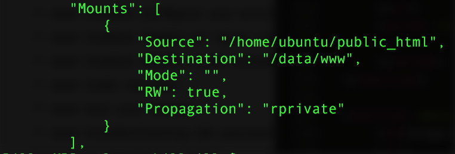

Diagram of example

A volume is a designated directory in a container, which is designed to persist data, independent of the container’s life cycle
The docker `volume` command contains a number of sub commands used to create and manage volumes:
docker volume create --name demo
docker volume ls
docker volume inspect demo
docker volume rm demo
# Execute a new container and mount the volume test1 in the folder /www/test1
docker run -it -v test1:/www/test1 ubuntu:14.04 bash
# 1. Create a volume called test1:
> docker volume create --name test1
# 2. Run docker volume ls and verify that you can see your test1 volume
# 3. Execute a new Ubuntu container and mount the test1 volume. Map it to the path /www/website and run bash as your process:
> docker run -it -v test1:/www/website ubuntu:14.04 bash
# 4. Inside the container, verify that you can get to /www/website:
> cd /www/website
# 5. Create a file called test.txt inside the /www/website folder:
> touch test.txt
# 6. Exit the container without stopping it by hitting CTRL + P + Q
# 7. Commit the updated container as a new image called test and tag it as 1.0:
> docker commit test:1.0
# 8. Execute a new container with your test image and go into it’s bash shell
> docker run -it test:1.0 bash
# 9. Verify that the /www/website folder exists and that there are no files inside, and exit the container.
# 10. Run docker ps to ensure that your first container is still running.
# 1. Run `docker volume inspect` on the test1 volume:
> docker volume inspect test1
# 2. Copy the path specified by the Mountpoint field. The path should be /var/lib/docker/volumes/test1/_data
# 3. Elevate your user privileges to root:
> sudo su
# 4. Change directory into the volume path in step 2:
> cd /var/lib/docker/volumes/test1/_data
# 5. Run `ls` and verify you can see the `test.txt` file
# 6. Create another file called `test2.text`:
> touch test2.txt
# 7. Exit the superuser account:
> exit
# 8. Use `docker exec` to log back into the shell of your Ubuntu container that is still running
> docker exec -it bash
# 9. Change directory into the `/www/website` folder.
# 10. Verify that you can see both the `test.txt` and `test2.txt` files
# Delete the volume called test1 > docker volume rm test1 # Delete a container and remove it’s associated volumes > docker rm -v
# 1. Delete the container from exercise 8.1 without using any options :
> docker rm
# 2. Run `docker volume ls` and check the result
# 3. Notice our `test1` volume is still present
# 4. Elevate your user privaleges:
> sudo su
# 5. Change directory to the volume path and check to see that the `test.txt` and `test2.txt` files are still present
> cd /var/lib/docker/volumes/test1/_data
> ls
# 6. Exit superuser:
> exit
# 7. Delete the test1 volume:
> docker volume rm test1
# 8. Run `docker volume ls` and make sure the test1 volume is no longer displayed.
# Mount the contents of the public_html folder on the hosts to the container volume at /data/www
> docker run –d -v /home/user/public_html:/data/www ubuntu
The Mounts field from `docker inspect` will show the container volume being mapped to the host path specified during `docker run`:

# 1. On your host, make a directory called ‘demo’ and add a file to it:
host> mkdir demo
host> touch demo/file1.dat
# 2. Mount ‘demo’ in a container:
> docker run -it -v demo:/www/demo ubuntu:14.04 bash
# 3. In the container, ‘ls’ the ‘/www/demo’ directory. Do you see ‘file1.dat’?
# 4. Add another file to ‘/www/demo’ from within the container:
container> touch /www/demo/file2.dat
# 5. Exit the container. What is in the ‘demo’ directory you made in step 1? Where are file1.dat and file2.dat?
# 6. Modify file1.dat on your host, run the container as above, and verify that the changes appear inside the container.
# 1. Create a volume called nginx_logs:
host> docker volume create --name nginx_logs
# 2. Run the custom `trainingteam/nginx` container and map your public_html folder to a volume at `/usr/share/nginx/html`. Also mount your nginx_logs volume to the `/var/log/nginx` folder. Name the container nginx_server:
host> docker run -d -P --name nginx_server \
-v ~/public_html:/usr/share/nginx/html \
-v nginx_logs:/var/log/nginx \
trainingteam/nginx
# 3. Get terminal access to your container
> docker exec -it nginx_server bash
# 4. Put some text into `/usr/share/nginx/html/index.html` folder, and then exit the terminal.
# 5. Run `docker ps` to find the host port which is mapped to port 80 on the container.
# 6. On your browser, access your AWS server URL and specify the port from question 5).
# 7. Verify you can see the contents of your index.html file from your public_html folder.
# 1. Get terminal access to your container again:
host> docker exec -it nginx_server bash
# 2. Change directory to /var/log/nginx:
container> cd /var/log/nginx
# 3. Check that you can see the access.log and error.log files
# 4. Run `tail -f access.log`, refresh your browser a few times and observe the log entries being written to the file
# 5. Exit the container terminal
# 6. Run docker volume inspect nginx_logs and copy the path indicated by the Mountpoint field (Path should be `/var/lib/docker/volumes/nginx_logs/_data`).
# 7. Elevate user priveleges
> sudo su
# 8. Change directory into the volume path
> cd /var/lib/docker/volumes/nginx_logs/_data
# 9. Check for the presence of the access.log and error.log file
# 10. Run tail -f access.log, refresh your browser a few times in order to make some requests to the NGINX server
# 11. Observe log entries being written into the access.log file
# 1. Run `docker ps` and make sure that your nginx_server container from the last exercise is still running.
# 2. Run an Ubuntu container and mount the nginx_logs volume to the folder /data/mylogs as read only. Run bash as your process.
host> docker run -it \
-v nginx_logs:/data/mylogs:ro \
ubuntu:14.04 bash
# 3. On your container terminal, change directory to `/data/mylogs`
# 4. Confirm that you can see the access.log and error.log files
# 5. Try and create a new file called text.txt
container> touch test.txt
# 6. Notice how it fails because we mounted the volume as read only
# String example
VOLUME /myvol
# String example with multiple volumes
VOLUME /www/website1.com /www/website2.com
# JSON example
VOLUME [“myvol”, “myvol2”]
FROM ubuntu:14.04
RUN apt-get update
RUN apt-get install -y vim wget
RUN mkdir /data/myvol -p && echo "hello world" > /data/myvol/testfile
VOLUME ["/data/myvol"]
# Inspect the properties of the ubuntu:14.04 image > docker inspect ubuntu:14.04 # OR > docker inspect